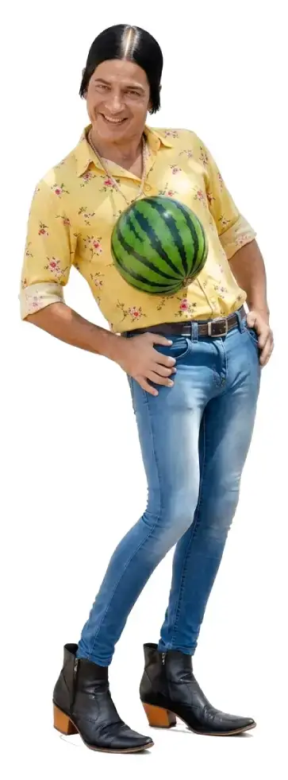
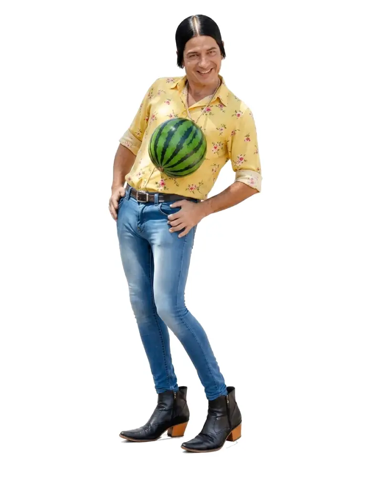

Curiosidade Urbana
Estava andando pela rua quando vi um rato perdido. Era um rato adulto, jovem e de aparência saudável, porém parecia estar dopado. Esse rato parou e deitou no asfalto. Isso me chamou a atenção porque não é uma coisa comum. Então eu me aproximei e reparei que ele apresentava grande fraqueza e abria a boca como se estivesse desesperadamente buscando algo para ingerir. Não entendi o que se passava com aquele animal e o empurrei para perto do meio-fio. Assim, nenhum pneu iria esmagá-lo contra o asfalto, evitando mau cheiro na rua. Se morresse e permanecesse inteiro perto do passeio, alguém poderia colocá-lo no saco de lixo. Fiquei pensando no que poderia ter acontecido com aquele animal. Tudo levava a crer que se tratava de envenenamento. A curiosidade me levou a fazer uma pesquisa sobre a vida do rato de esgoto e, para minha surpresa, descobri como esse animal é dotado de superpoderes de sobrevivência. Achei tão deslumbrante o que encontrei que resolvi reunir essas informações neste livro abaixo.
Se você gosta de descobrir coisas curiosas, esta é a sua oportunidade.
Após ver o anúncio do livro sobre "Ratos Urbanos",
Veja um exemplo real de como evitar ratos e baratas em uma cozinha de delivery.
Observe a higiene de uma cozinha exemplar no armazenamento dos ingredientes.
Matéria produzida no antigo "Disque Feijoada Caminath", em Belo Horizonte.


Dicas de comunicação!..
.
No marketing você precisa aparecer.
Então deixa de ser o "Zé Escondido" e vire o "Zé Aparecido".
Para mais dicas como essa, inscreva-se no canal, deixe o like e acione as notificações.


Como um negócio promissor acabou.
Eduardo T. Soares, doravante "Chef Du", iniciou o Disque Feijoada focando toda a estratégia no delivery. O ano era 1997, e o celular ainda estava engatinhando. O país começava a oferecer um novo objeto de status. Falar ao celular era muito "chique", e o preço da ligação chegava aos exorbitantes R$ 1,50 por minuto. Ou seja, ao conversar apenas 10 minutos, o distraído tomava uma lenhada de R$ 15,00 na carteira. Muitas pessoas fingiam conversar ao celular apenas para "tirar uma de rico". Foi nesse cenário que surgiu o Disque Feijoada Caminath. Ninguém queria gastar ligando para celular, porque o minuto custava uma fortuna. Mas era comum alguém pedir: "Liga para o meu celular". Assim, a pessoa ficava uma hora conversando, mostrando o aparelho para quem estivesse por perto, enquanto quem pagava a conta era você. Com isso, a dependência do telefone fixo era real, e a clientela foi construída em torno dele. Naquela época, não havia portabilidade, e os números seguiam uma lógica por área. Exemplo: o prefixo 221 fazia parte de uma região, o 223 de outra, e assim por diante. Por motivo de força maior, tive de mudar de endereço. Ao mudar, obrigatoriamente, o número da linha foi alterado, e o Disque Feijoada desapareceu "da noite para o dia". Se não fosse o valor absurdo das ligações para celular, a divulgação teria sido feita utilizando o número do celular, e não haveria as amarras do prefixo vinculado à área geográfica. Essa experiência me ensinou a nunca mais depender de um endereço fixo para o funcionamento de qualquer empreendimento.
Quero a solução para minha empresa
.png)
Obrigado pela visita
Até a próxima.